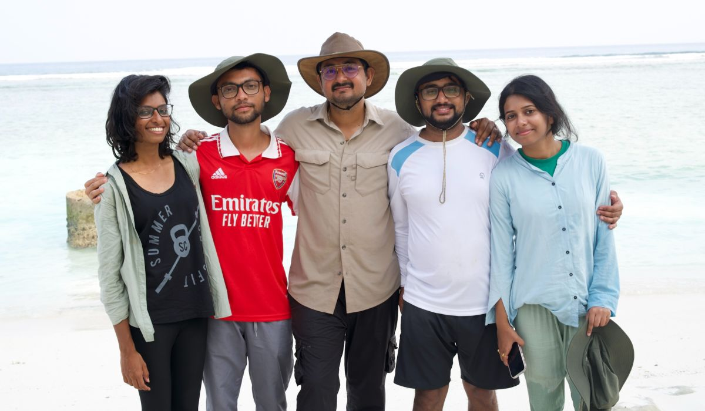
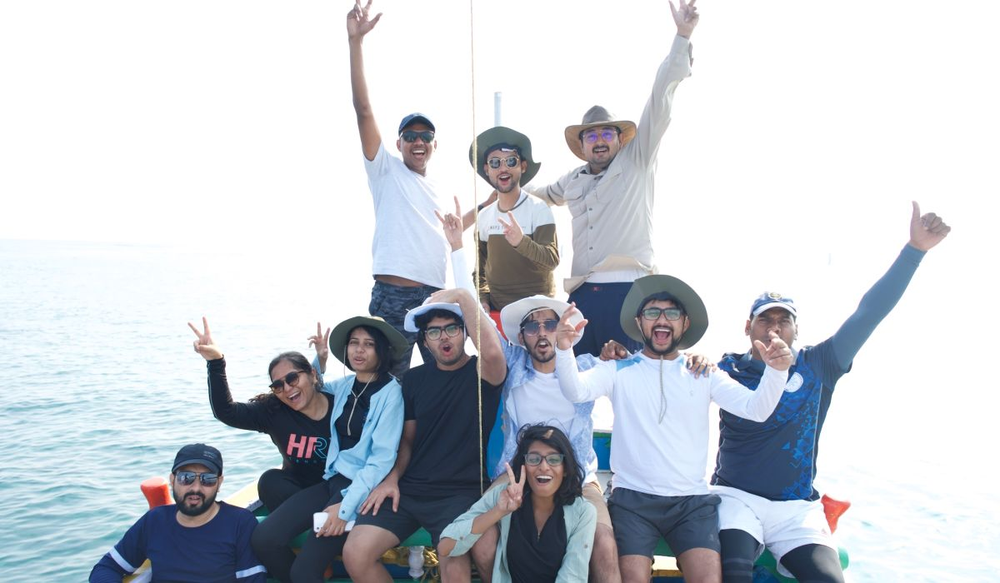
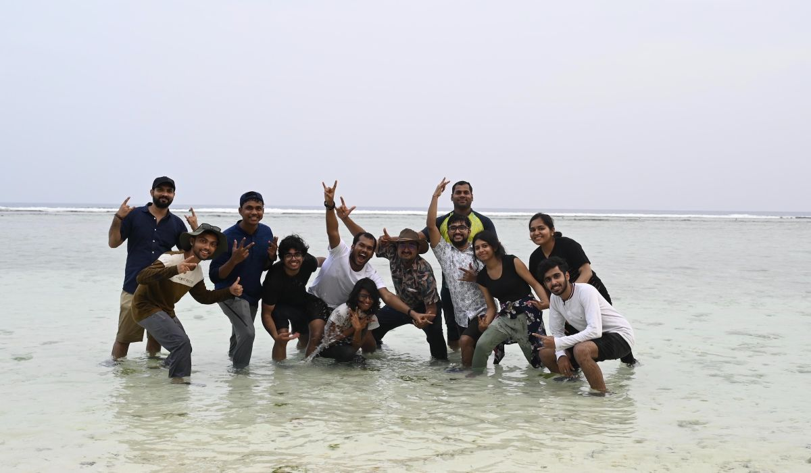
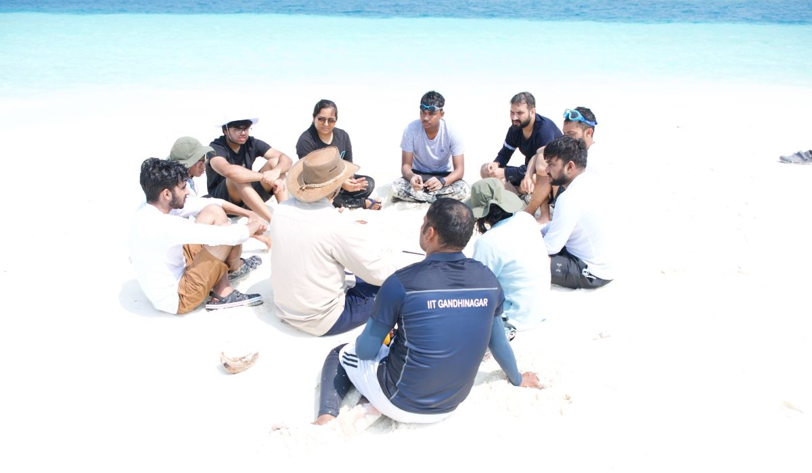

We departed for Ahmedabad airport from IIT Gandhinagar around 7 o’clock.

Our research group



Coral reefs are underwater ecosystems characterized by reef-building corals. Reefs are formed of colonies of coral polyps held together by calcium carbonate. Understanding them is significant from the perspective of carbonate sedimentology as well as climate studies. Corals are one of the major carbonate factories and are sensitive to climate change. The purpose of the short course was to understand the past present and future aspects of Coral reefs and gain hand-on training in Lakshadweep.